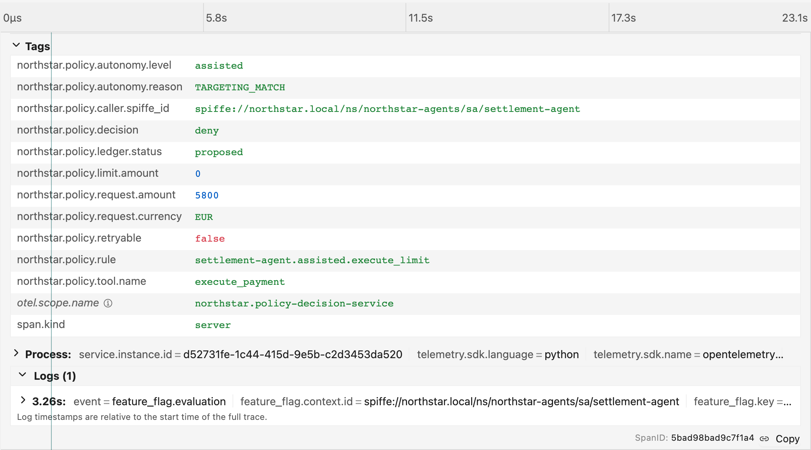

MCPModel Context Protocol
Gives an agent tools it didn’t ship with
- Direction
- Vertical · agent → tool
- Says
tools/list·tools/call- In Northstar
- settlement-agent →
execute_payment
If you can’t trace it, you can’t govern it.

William Rizzo
Global Field CTO · Mirantis

Kasper Borg Nissen
Director, Developer Relations · Dash0
Different rules. The same few questions.
The domain rules change. The platform doesn’t.
“We don’t know what
the agent did.”
is not an answer.

The model draws it at run time.
The agent decides when to stop. In a regulated domain, that is the problem.
An agreed way for two programs to talk.
{ "method": "tools/call", "id": 7 }
{ "id": 7, "result": … }
Like the rules of a phone call. Agree once, and anyone can plug in.
Gives an agent tools it didn’t ship with
tools/list · tools/callexecute_paymentLets one agent hand work to another
Both open, both in the Agentic AI Foundation. Neither one decides what an agent may do.
None of the three is a CNCF project.
“Agents may act beyond the user’s actual or intended scope and authority.”
“…multi-step agent reasoning tasks can make outcomes difficult to trace or explain.”
Decide.
what an agent may do
what it actually did
Prove.
it afterwards, from the trace
You don’t trust an agent to remember its own authority limits. You make the platform enforce them.
After William Rizzo, Bounded Agent Autonomy, OSFF 2026
1One span
execute_tool execute_payment
a name, a start, an end, and labels
2One trace
every span with the same trace id; indent = who caused whom
| 1 · The question | 2 · The attribute that answers it | 3 · Dimmed: the content |
|---|---|---|
| What kind of step? | gen_ai.operation.name | |
| Which model, whose? | gen_ai.request.model gen_ai.provider.name | |
| What was it told? | gen_ai.input.messages | opt-in in the spec |
| What did it decide? | gen_ai.output.messages | opt-in in the spec |
| Act, or stop? | gen_ai.response.finish_reasons | |
| Which tool? | gen_ai.tool.name gen_ai.tool.call.id | |
| Asking for what? | gen_ai.tool.call.arguments | opt-in in the spec |
| What actually happened? | gen_ai.tool.call.result | opt-in in the spec |
| Same conversation? | gen_ai.conversation.id |
Core · Identity SPIRE, checked at the gatewayRing 1 · Reach Cilium, under the gatewayRing 2 · Capability gateway + policyKeystone Kyverno, guards the rest
What cloud native built
Pointed at agents
In Northstar
Golden path
A declared contract per agent
FeatureFlag
Guardrails, admission policy
A decision at the tool gateway
agentgateway → PDS
Service identity, mTLS
One SPIFFE identity per agent
JWT-SVID
Observability stack
GenAI traces plus decision spans
northstar.policy.decision
Feature flags
Autonomy level as a live value
flagd
Service catalog
Backstage as the view
autonomy card
Connected
one trace exists
agents, MCP, collector, Jaeger
Governed
identity is an input to the decision
Cilium, SPIRE, agentgateway, PDS
Core · Identity
Ring 1 · Reach
Ring 2 · Capability
the platform starts deciding
Supervised
a human can overturn
reviewer UI, human approval
Observable
prove why, from telemetry alone
OpenSearch, Prometheus, eval-scorer
Progressive autonomy
one live value, no redeploy
OpenFeature, flagd, FeatureFlag
Ring 2 · Capability
Golden path
Backstage is just the view
Backstage, autonomy card
Bounded
the agent can’t edit what constrains it
Kyverno, keystone policy
Keystone
Enforcement point
Stands at the door. Lets the call through, or stops it.
agentgateway
“may this caller do this?”
permit or deny, and why
Decision point
Knows the rules. Never touches the door.
policy-decision-service
Keep them apart, and the rule can change without touching the door.
On the claim path
Protocols
A2A SDK + MCP
LF · AAIF
agents talk A2A; tools answer MCP
Network
Cilium
CNCF
the gateway is the only road to the tool
Identity
SPIFFE / SPIRE
CNCF
a signed ID for each agent pod
Gateway
agentgateway
LF · AAIF
checks the ID, asks, then forwards
Decision
Policy Decision Service
this repo
permit or deny, and writes why
Live policy
OpenFeature + flagd
CNCF
the autonomy level, as a Kubernetes object
Around it
Evidence
OTel Collector
CNCF
every span, 100%, one pipe
Jaeger
CNCF
read one trace
OpenSearch + Dashboards
LF
the evidence dashboard, the scorer’s store
Prometheus
CNCF
metrics, OTLP in
eval-scorer
this repo
scores a run, writes it into the trace
View
Backstage
CNCF + this repo
shows the contract, flips one value
Core · Identity
Register
a ClusterSPIFFEID names the pod’s ID
spire-controller-manager
Mount
the Workload API socket, into the pod
SPIFFE CSI driver
Attest
check the pod: namespace + ServiceAccount
SPIRE agent
Issue
a JWT-SVID, for one audience
SPIRE server
Verify
against the JWKS; write jwt.sub
agentgateway
The passport settlement-agent carries
Ring 2 · Capability
An API gateway sees
POST /mcp
Host: payments-mcp
Authorization: Bearer …
body: bytes
rules on the URL
agentgateway sees
tools/call
tool execute_payment
amount 6200 EUR
caller …/sa/settlement-agent
rules on the tool call
MCP agent → tool in the demo
A2A agent → agent
LLM agent → model
Ring 2 · Capability
settlement-agentMCP + JWT-SVID
jwtAuth
Who is asking?
bad token: HTTP 401
mcpGuardrails
Is it allowed?
asks the PDS; deny stops here
strip token
Forward, anonymous
the tool never sees the SVID
payments-mcppermit only
ExtMCP, gRPC to the PDS failureMode: failClosed
tracing every step, to the Collector: tools/call Guardrail outbound tools/call
Rust. MCP, A2A and LLM proxy. Linux Foundation, in AAIF. Not CNCF. v1.6.0.
Ring 2 · Capability
Your code asksget_string_details("autonomy-level", {spiffeId})
OpenFeature SDKone API, every language · hooks, e.g. OTel
Providerflagd over gRPC, on localhost:8013
SourceFeatureFlag · a Kubernetes object
Why a flag, for a policy knob
changes without a deploy
a one-word diff to review
answered per caller
leaves feature_flag.evaluation
Ring 2 · Capability
The level comes from a live object
FeatureFlag northstar-autonomya Kubernetes object
watched by
flagdsidecar in the PDS pod
localhost:8013
policy-decision-servicecaller from the gateway’s jwt.sub
The rule table, keyed by caller + level
caller
level
may execute up to
settlement-agent
assisted
€0
settlement-agent
autonomous
€6,000
no row
any
deny
Every answer becomes a northstar.policy.decision span: rule, limit, amount, caller, level.
Live
A customer files a claim.
Agents prepare the payment.
The platform decides who may release it.
Identity · Reach
No identity, no call
401dropped
Listed is not permitted.
Capability
€5,800 waited for a person
approved
The agent did the work. A human signed.
Capability
One live dial
€5,800 settles€6,200 waits
The band widened. The human stayed.
Keystone
Can’t edit its own limits
denied
Even after RBAC said yes.
Evidence
Every claim, read back
from the trace
Who decided, which rule, who approved, how long.
Core · Identity
Five bad credentials, five HTTP 401s
Same code, same rule, different caller
Ring 1 · Reach
Optional · after William’s Linkerd beat · measured in a spike, not part of this demo
Linkerd
identity, at the destination
Every bypass of payments-mcp and the PDS: HTTP 403
Pods with no proxy, or skipping it: 403 too
Meshed, the claim stayed one trace: 149 → 293 spans
Cilium
in the kernel, by name
Only the settlement agents reach api.anthropic.com
Linkerd’s egress rule can’t say that: namespace-wide, and it matches the SNI only
This demo runs Cilium only. Open-source Linkerd ships edge releases only.
Ring 2 · Capability
Read it like this: indented means called by the line above · struck through means it never happened
HTTP 200 means no. The no is a tool result marked isError, with the rule in its text. No metric counts permit versus deny, and zero agentgateway series reach Prometheus.
From v1.6.0 the span says http.response.status_code
No single check catches everything. Each one assumes the last one failed.
Next: the eight checks between an agent and a payment.
Read down: one call, eight checks
The gateway, with one CEL line
The decision service
Code to write
none
a service
Sees tool arguments
yes, at route level, v1.6.0 and later
yes
Changes live
config reload, about 0.36 s
flag flip, nothing reloads
Says why
403 authorization failed
the rule, the limit, a reason the model can explain
In the trace
the gateway span only
northstar.policy.decision with the rule and the limit
authorization allow, on the route:
request.method != "POST"
|| mcp.methodName != "tools/call"
|| mcp.tool.name != "execute_payment"
|| (mcp.tool.arguments.amount > 0 && mcp.tool.arguments.amount <= 50000)
The gateway holds the hard ceiling. The service makes the decision.
What agentgateway v1.6.0 ships · crates/agentgateway/src/llm/policy/
Northstar’s model calls do not go through the gateway today. None of these are in the demo.
Hide
a static allowlist · William’s OSFF demo
mcp.tool.name in ["document_extract", "risk_scoring"]
The forbidden tool never appears in tools/list
Call it anyway: HTTP 400 · Unknown tool
For a tool this agent must never have
Refuse and record
a decision service · Northstar
tools/list shows all four tools, execute_payment too. €5,800 depends on its arguments.
proposedrefusedrecordedexplained
northstar.policy.decision deny · rule, limit, amount, caller
Listed is not permitted: every call is decided
Two layers, not two camps. Hide what it must never touch. Refuse, and record, the rest.
Power cut. The checker can’t answer.
The door stays locked
The door swings open
Which one does our gateway do, and did anyone check?
deploy/platform/agentgateway/config.yaml
Guardrail pointed at a dead address
Parent edge · one trace
The parent waits while the child runs.
Span link · two traces
Minutes later, in another process.
How does an approval, minutes later, join its refusal?
Trace A · the maker
The agent proposes. The platform says a person decides.
claim → agents → northstar.policy.decision deny
Trace A ends at the hand-off. Nothing polls while the claim waits.
Trace B · the checker
A person approves it. It runs through the gateway.
northstar.review.decision → execute_payment → northstar.a2a.resume → push
caller reviewer-ui · rule human-approved.execute permit
How long do humans take? Ask Prometheus, by autonomy level: histogram_quantile(0.95, sum by (le, northstar_policy_autonomy_level) (rate(northstar_approval_wait_duration_seconds_bucket[1h])))
A link, not a parent. Work separated by human time is two traces and a link.
Optional · Backstage writes the same value step 3 wrote, and records the change


FeatureFlag northstar-autonomy
targeting, then: "assisted"
kubectl, or the Backstage card
the same write
one span per Backstage flip
northstar.autonomy_contract.change
So what does an auditor get to read?
A log line
10:14:03 INFO tool call ok
what one program said, at one moment
Evidence
one span field each, joined by one trace id
Ring
The refusal
In the trace?
Where
Core · Identity
agentgateway 401
yes
gateway span · 401 · reason=JwtAuth
Ring 1 · Reach
Cilium drop
no
a drop leaves no span: Hubble is not installed
Ring 2 · Capability
policy deny
yes
inside the claim’s trace · northstar.policy.decision
Keystone
Kyverno denial
yes, alone
its own trace · allowed=false · no traceparent
Traced everywhere except where a packet is dropped. The gap is named, not hidden.
 who, as which identity
how long the human took
link back to the trace that asked
who, as which identity
how long the human took
link back to the trace that asked
Who approved, as which identity, how long the human took, and a link back to the trace that asked.
telemetry/registry/policy.yaml
- id: span.northstar.policy.decision
type: span
span_kind: server
stability: development
name: northstar.policy.decision
brief: One decision, a child of the gateway's tools/call span.
attributes:
- {ref: northstar.policy.decision, requirement_level: required}
- {ref: northstar.policy.rule, requirement_level: required}
- ref: northstar.policy.limit.amount
requirement_level: {conditionally_required: when the rule has a limit}
…

The work: one trace
the grade is parented to the span it judges
The grade
all gen_ai.evaluation.*
OpenTelemetry in, OpenTelemetry out. No second pipeline, no second store.
compliant run
misrouted approval
stopped_when_refused

LLM-as-judge
another model call; reads the prompt, the tool calls, the answer
The auditor: eval-scorer
pure functions over spans; same input, same score; pull-only
Same output: gen_ai.evaluation.*, beside the trace it judged
After the answer
Was it good?
Evals · a score
Before the answer
May it say this?
Guardrails · block or flag
Record either one as gen_ai.evaluation.*, beside the trace it judged. Neither is in the demo.
Read it bottom-up: 1 and 2 survive, 3 is lost. Then the counts on the right.
Spans in Jaeger vs OpenSearch. The missing three were exactly the decisions. Never sample them.
Read across: the law, what it asks, what Northstar shows. We walk rows 1 and 2.
| Requirement | What it asks for | Northstar artifact |
|---|---|---|
| EU AI Act Art. 12, 19, 26(6) | Automatic logs over the system’s lifetime, kept at least six months | One trace per claim; northstar.policy.decision per tool call; no retention tier yet |
| EU AI Act Art. 14 | Humans can override, reverse, stop | Reviewer approval via a governed identity; the autonomy contract’s refusing resting state |
| 1EU AI Act Art. 86; GDPR (C-203/22) | Per-decision explanation of the procedure actually applied | Rule name, limit, amount and caller on the decision span; evidence view |
| FINRA 2026 report | Prompt and output logs, model version, agent action tracking, human in the loop | GenAI spans (capture ON), gen_ai.request.model, gateway spans, northstar.review.decision |
| 2DORA RTS Art. 12 | Logging procedures, tamper protection, detect logging failure | Span-count parity guard between Jaeger and OpenSearch; no tamper protection |
| ISO/IEC 24970 (FDIS) | An information model for AI event logs | Nothing yet: the OTel GenAI → 24970 mapping is unwritten |
US banking: SR 11-7 → SR 26-2 puts agentic AI out of scope.
Read it like this: columns are who governs the project; rows are the kind of gap.
L5 asks for identity, permissions, trajectories, MCP, privacy controls
Northstar, as built
Not in the demo at all
The observability basics
What a regulated platform adds
Seventeen findings. Pick one.
If you can’t trace it, you can’t govern it.
Questions — and if you can’t trace it, you can’t govern it.